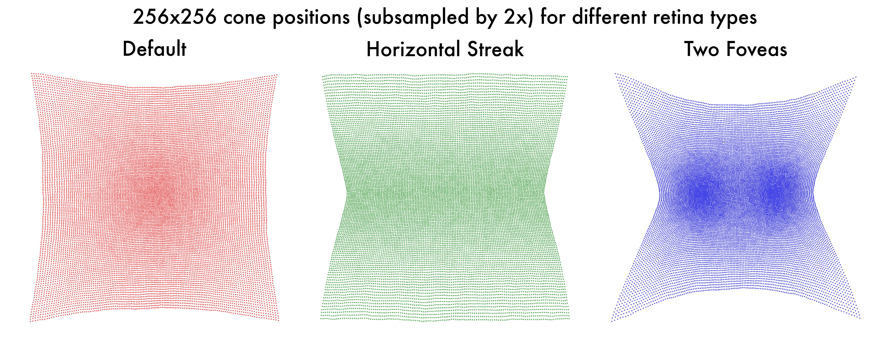
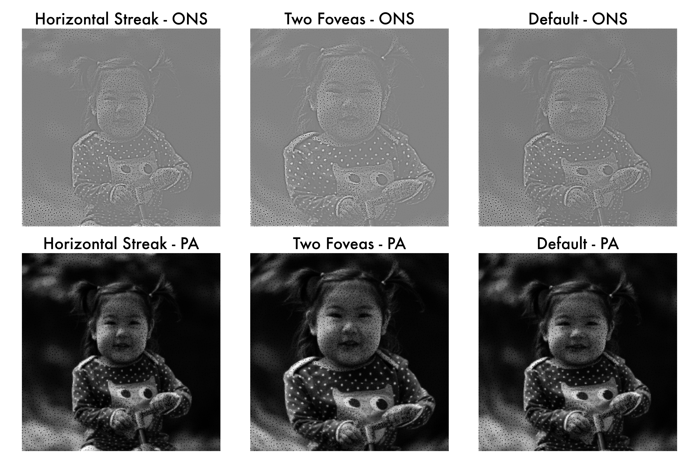

2. Simulation of extreme cone positions
The cone positions in our default retina model has a single fovea, which creates a foveation effect in the simulated retinal responses. But it is known that other animals have totally different distribution of cone positions, such as two foveas in hawks or horizontal streak foveas in lizards or kangaroos.
In this tutorial, we will demonstrate how to simulate such different cone positions, and see how they affect the retinal responses.
2.1. Identify the module to customize
To simulate such different cone positions, we need to modify SpatialSampling module in the retina model.
The folder is located at Simulated/Retina/FV_spatial_sampling.
Within this folder:
FV_Abstract.pydefines the abstract base classAbstractSpatialSampling, which governs spatial sampling.FV_Default.pydefines the default implementation,DefaultSpatialSampling.
To create a custom implementation, we need to define a new class inheriting from AbstractSpatialSampling. For demonstration, we’ve already provided an example class, CustomSpatialSampling, in the file FV_Custom.py. For more details in the code structure, please refer to the anomalous trichromacy tutorial.
2.2. Define your configuration
Pausing before implementing the full code of the CustomSpatialSampling class, let’s start working on the YAML configuration file.
One possible update you can make to the default YAML configuration file is as follows:
Default YAML Configuration
# (Before Change) Default Retinal model parameters
RetinaModel:
retina_spatial_sampling:
type: 'Default' # Spatial sampling strategy for the retina
Modified YAML Configuration
# (After Change) Custom Retinal model parameters
RetinaModel:
retina_spatial_sampling:
type: 'CustomConePositions' # Spatial sampling strategy for the retina
cone_position_distribution_type: 'HorizontalStreak' # Type of cone position distribution
The full example of the YAML configuration file can be found in the HorizontalStreak.yaml or TwoFoveas.yaml.
Now, given this YAML configuration file, let’s implement the CustomSpatialSampling class.
...
...imports...
from Simulated.Retina.FV_spatial_sampling import register_class
@register_class("CustomConePositions")
class CustomConePositions(AbstractSpatialSampling):
def __init__(self, params):
super(CustomConePositions, self).__init__(params)
# Custom cone positions
cone_position_distribution_type = params['RetinaModel']['retina_spatial_sampling']['cone_position_distribution_type']
cone_locs, mip_level, self.required_image_resolution = get_cone_sampling_map(params, cone_distribution_type=cone_position_distribution_type)
...rest of the code...
The idea here is to utilize the defined parameter cone_position_distribution_type to specify the distribution of the cone positions.
We have pre-computed different distribution of the cone positions in the get_cone_sampling_map function, and you can choose the one you want.
Obviously, this is not the only way to modify the cone positions, and you can implement your own function to define the cone positions.
For example, instead of giving the cone positions explicitly as a 2D grid, you can define the cone positions by an inplicit function. If we were to simulate two foveas, one example of the function is: $\( f(x, y) = 1 - \left[ \exp\left(-\alpha \left((x + 0.5)^2 + y^2\right)\right) + \exp\left(-\alpha \left((x - 0.5)^2 + y^2\right)\right) \right] \)\( where \)\alpha$ is a parameter that controls the sharpness of the distribution. You can choose to make your own custom class that takes this density function and generate the cone positions accordingly. But this is beyond the scope of this tutorial, so we will leave it as an exercise for the reader.
2.3. Run and analyze
Now, let’s instantiate three retina models, one with the default cone positions, one with the horizontal streak fovea, and one with the two foveas.
from Simulated.Retina.RetinaModel import RetinaModel
# DEFAULT RETINA MODEL
with open(f'{ROOT_DIR}/Tutorials/03_CustomSimulation/Config/Default.yaml', 'r') as f:
default_params = yaml.safe_load(f)
retina_model_default = RetinaModel(default_params)
# Load the default parameters for the trichromatic retina simulation
with open(f'{ROOT_DIR}/Tutorials/03_CustomSimulation/Config/HorizontalStreak.yaml', 'r') as f:
horizontal_streak_params = yaml.safe_load(f)
retina_model_horizontal_streak = RetinaModel(horizontal_streak_params)
# Load the parameters for the anomalous trichromatic retina simulation
with open(f'{ROOT_DIR}/Tutorials/03_CustomSimulation/Config/TwoFoveas.yaml', 'r') as f:
two_foveas_params = yaml.safe_load(f)
retina_model_two_foveas = RetinaModel(two_foveas_params)
If we were to visualize the cone positions, we can see the following results:

And if we were to compare the retinal responses of the three models, we can see the following results:

2.4. Further analysis (Optional)
Now you defined a custom retina model, you can try training the cortex model with the specific retina model. This is to test whether the cortex model can learn to infer complex distributions of the cone positions from the retinal responses, and you can do so by the following code:
python train_main.py -f <path_to_your_custom_retina_model_yaml_file>
2.5. Conclusion
In this tutorial, we have demonstrated how to simulate different cone positions, and see how they affect the retinal responses. Similar to the anomalous trichromacy tutorial, we have demonstrated how you can customize the retina model to fit your needs.